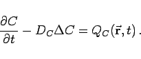

Inhalt Index DeskTop Bronstein

 Differentialgleichungen Partielle Differentialgleichungen Partielle Differentialgleichungen aus Naturwissenschaft und Technik Wärmeleitungs- und Diffusionsgleichung für ein homogenes Medium
Differentialgleichungen Partielle Differentialgleichungen Partielle Differentialgleichungen aus Naturwissenschaft und Technik Wärmeleitungs- und Diffusionsgleichung für ein homogenes Medium


In Analogie zur Wärmeleitung wird die Ausbreitung einer Konzentration C in einem homogenen Medium durch die gleiche lineare partielle Differentialgleichung (9.106a) bzw. (9.106d) beschrieben, wobei DW durch den Diffusionskoeffizienten DC zu ersetzen ist. Die Diffusionsgleichung lautet:
|  | (9.107) |
Die Lösungen erhält man durch Austausch der Symbole in den Wellengleichungen (9.106b) und (9.106c).